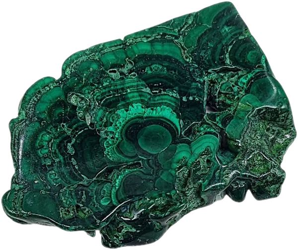
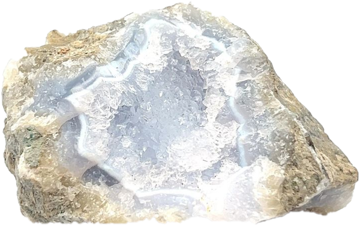

Как формируются кристаллы
Кристалл - это твёрдое вещество, в котором атомы выстроены в строгом повторяющемся порядке. Поэтому у кристаллов ровные грани и острые углы: внешняя форма камня повторяет его внутреннюю «решётку». Например, кварц почти всегда растёт шестигранными столбиками с заострённой верхушкой.

Многие кристаллы из коллекций росли в трещинах и пустотах горных пород. Горячая вода с растворёнными минералами проникала внутрь камня, остывала, и минералы понемногу оседали на стенках. Слой за слоем пустота заполнялась кристаллами. Так появляются жеоды - невзрачные снаружи камни, внутри которых прячется настоящая пещера из сверкающих граней. Такой «сад» растёт тысячи и даже миллионы лет.

Цвет кристалла зависит от примесей и условий, в которых он рос. Чистый кварц прозрачный, как стекло. Если в нём есть немного железа и на камень долго действует природное излучение, кварц становится фиолетовым аметистом. Если аметист сильно нагреть, он желтеет и превращается в цитрин. А розовый кварц получает свой нежный цвет от мельчайших включений других минералов.

Не все камни на сайте - кристаллы в привычном смысле. Малахит и агат образуются из натёков: минерал откладывается тонкими слоями, как годичные кольца у дерева. Поэтому на срезе малахита видны зелёные полосы и «глазки», а у агата - кольца разных оттенков. В малахите есть медь, из-за неё он такого яркого зелёного цвета.

Камни описывают по нескольким признакам: цвету, блеску, прозрачности и твёрдости. Твёрдость удобно проверять по шкале Мооса: более твёрдый минерал оставляет царапину на более мягком. Кварц с твёрдостью 7 легко царапает стекло, а малахит с твёрдостью около 4 сам легко царапается. Поэтому мягкие камни лучше хранить отдельно, в мешочках или коробочках с мягким дном.
Многие люди собирают кристаллы не только из-за красоты. По старым поверьям, каждый камень обладает своими свойствами: розовый кварц - нежность, аметист - спокойствие, цитрин - радость. Наука эти свойства не подтверждает, но камень на столе всё равно может радовать глаз и напоминать о чём-то важном. Главное - выбирать тот, который нравится именно вам.